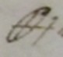

Thomas Beddoes to James Watt, 15 September 1794
Dear Sir
We have been very assiduous in applying air from zinc & acid washed by transmission through alkali in the 2nd vessel of Nooth’s apparatus to poor Capper’s lungs. He has experienced nausea & loss of appetite from this modification of hydrogen – It was in no respect irritating; he observed to me witht being at all questioned that his sleep was more profound & his nights easier – at first he thought his cough better; but 3 days ago an abscess, probably formed before his arrival here, broke & the atmosphere applied to the raw surface seemed to increase his cough & render him feverish – Tomorrow he shall have air from heated zinc & steam, then hydro-carbonic & afterwards fixed from heated chalk & steam & in the night from fermenting materials. Analogy & direct obsn seem at present to testify most strongly in favour of this air –
I like your appendix [xxxx] & think it compensates for the delay, at which I was discontent – the beginning of of yr letter of June 17th I have altered by leaving out some phrases, & lowering some others to the tone of queries. You will think I have done too little rather than too much. But I have left nothing that can be interpreted as rash or absurd; & in such a case a man of your information & judgment has as good a right to propose his conjectures as any practitioner of medicine. Every considerate man must feel grateful to you for what you have effected & what you have thrown out in the way of conjecture – shd you make any comparative expt with the Mendip & Exeter manganese & have time to transmit such a notice of it as you wd not dislike to see in print, I shd be obliged to you to do it as it may come in time or shd be printed afterwards & given to the purchasers of ye pamphlet – I never thought till lately of obtaining air from [sign for sulphuric acid] & manganese; & hence have only obtained it in such quantities as to prove its goodness & ascertain the proportion yielded by a given weight of manganese – I obtained in the large way from heated manganese where much attention is needed to catch the purest part of the yield of air, the first being impure & the last also – I always too used Mendip never having possessed any qty of Exeter manganese –
If the plates can be well taken off at Birmingham, may I request you to have 500 done for me – This is the no of copies I print – you may as well keep the plates & send engravings with your apparatuses; of which it is probable a good many may be demanded – The possessor of the pamphlet will not be sorry to have duplicates of ye plates – I do not think it necessary to send you proofs of ye rest of your obsns as I can correct them perfectly well. I am your obliged & faithful sert
Thomas Beddoes
Respecting the japanned tin instead of the tinned copper I thank you for making the change – I am very desirous to see yr little apparatus, with the sand-pot &c
Address: James Watt Esqr / Heathfield / Birmingham
Endorsement: Dr Beddoes / Sepr 15th 1794 // recd Sepr 16th
MS: LoB MS 3219/4/28/15
Note
 Beddoes uses this symbol for oil of vitriol (sulphuric acid). This symbol is similar to that given by Torbern Bergman (1735-1784) in the list of chemical symbols and abbreviations in his Dissertation on Elective Attractions (1775).